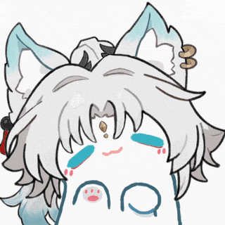

Resource Hub · 资源中转站
——连接我的各类个人资源
资源中转 · Resource Hub：
本站现定位为连接个人各类资源的中转站，主站已迁移至 yinzachary24.top。 以下入口可直达各处资源，祝探索愉快。
网站介绍：
To陌生人：
恭喜你，你发现了答辩！这个网站可能对你无很大帮助，因为创立初衷只是为了练习作者的web能力。
如今作者已建立了新的个人主站，本站便顺势转型为连接个人各类资源的中转站——把散落各处的学习资料、项目、日志与主站串到一起。
无论是<技术性>还是<规范性>上都远远不如各位一根（？嘴下留情😭！
当然，如果你对这个网站感兴趣，想要了解更多关于作者的信息，或者想要获取一些学习资料，也可以在我的web中进行访问，绝对开源，且仅供学习交流使用！ 毕竟，To share is to live - 只有分享才是真正的活过。祝我们都能徜徉于知识的海洋，共勉！
关于我
目前是大二在读理工🚹，废宅一个，人菜瘾大，喜欢糟蹋各种技术，尤其是和code相关的东西。 平时喜欢打打小游戏（单机抑智小游戏为主，从背景和开头的台词也能看出来是一枚老头环魔怔人❌）、刷刷小视频、听听小音乐、搞搞小啾啾（？。

---法环序言---
The fallen leaves tell a story.
落叶捎来讯息：
The great Elden Ring was shattered. In our home, across the fog, the Lands Between.
在雾的彼端，我们的故乡"交界地"，那伟大的艾尔登法环已经破碎。
Now, Queen Marika the Eternal is nowhere to be found, and in the Night of the Black Knives, Godwyn the Golden was first to perish.
"永恒女王"玛莉卡销声匿迹，在黑刀阴谋之夜，"黄金"葛德文最先失去性命。
Soon, Marika's offspring, demigods all, claimed the shards of the Elden Ring. The mad taint of their newfound strength triggered the Shattering. A war from which no lord arose. A war leading to abandonment by the Greater Will.
玛莉卡之子──诸位半神拿到艾尔登法环的碎片，却因为那股力量堕入歧途、陷入疯狂、引发碎片战争……在那场无王存在的战争最后── 无上意志放逐了他们。
Arise now, ye Tarnished. Ye dead, who yet live. The call of long-lost grace speaks to us all. Hoarah Loux, chieftain of the badlands. The ever-brilliant Goldmask. Fia, the Deathbed Companion. The loathsome Dung Eater. And Sir Gideon Ofnir, the All-knowing.
噢，所以啊，褪色者啊── 依旧无法永眠的死者啊。那许久以前我们失去的赐福，正在出声呼唤。 "蛮荒地王者"荷莱·露、 光耀金面具、"死眠少女"菲雅、受尽唾弃的食粪者、 "百智爵士"基甸·奥夫尼尔。
And one other. Whom grace would again bless. A Tarnished of no renown. Cross the fog, to the Lands Between, to stand before the Elden Ring. And become the Elden Lord.
……那失去的赐福又再一次， 回到默默无名的褪色者身上。 朝雾的彼端前进，抵达交界地，觐见艾尔登法环，成为艾尔登之王吧!
日志：
- web更新日志
- 26/1/25-更新内容：
- 正式立项！！！我相信这个项目不会烂尾；
- 目前的打算是建立自己的web，其中涵盖有自己往日的学习资料，同时也会有自己的一些日常分享；
- 为了便于其他人参考与访问，目前还打算移入github的个人项目库之中。
- 26/1/26-更新内容：
- 添加背景；
- 添加导航栏；
- 大致分划了内容分区；
- 添加了"关于我"的浮窗以及雪花的动画效果。
- ...（点击查看更多！）
- 此地空空如也。。。
一些项目库：
🧭 快速直达
上方的「资源中转」卡片汇总了全部入口；也可用右上角搜索直达任意课程资料页。
🏰 个人主站
博客与最新动态已迁移至 yinzachary24.top， 本站专注于做资源中转与资料归档。
其他：
© 2026 YZK. All rights reserved.
正在进行中的文档：
学习资料库/大二下/数据结构
🔍猜你想找：
数据结构dsa
大二春季学期邓老师《数据结构》课程
概率论与数理统计
大二秋季学期唐老师《概率论与数理统计》课程
复变函数与数理方程
大二秋季学期吴老师《复变函数与数理方程》课程